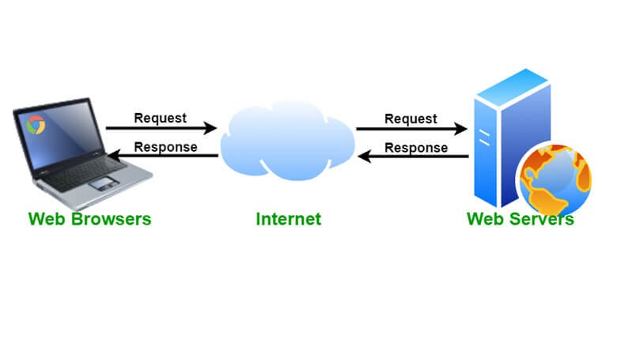
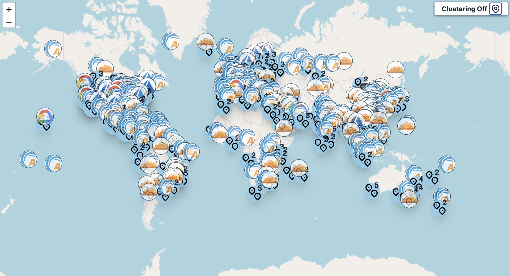
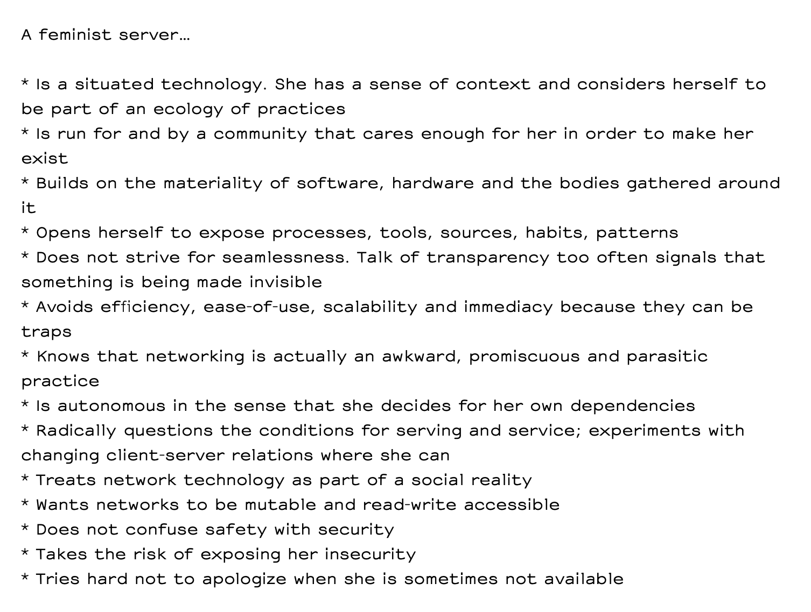

shoulder surfing: communal devices as sites of (un)learning?
Preparations
Brew and PHP
To make it a little easier, we will only use mac computers in this workshop. If you have another type of machine, please pair up with someone who does.
- Open the terminal
- Check if php is installed by typing
php -v. If it returns your php version, you can continue to the next part. If not, you need to install php using brew. - Check if brew is installed by typing
brew -v. If it returns your brew version, you are good to go. If not, run/bin/bash -c "$(curl -fsSL https://raw.githubusercontent.com/Homebrew/install/HEAD/install.sh) - Install php using the terminal using
brew install php
Context
Why self-hosting is political

server
When you visit a website, somewhere in the world there is a computer that has the website stored on it—that computer is one example of what we call a server. When you enter a URL into your browser, you are being connected to this server, and it will send you back (serve you) the content of the website. Your computer then displays this website in your browser, similar to the way a TV receives the signal from the TV station and renders it into an image on the screen.web hosting service
A web hosting service is a type of Internet hosting service. It allows people and companies to make their website available on the World Wide Web. Web hosts are companies which provide space on a server which is owned or leased for use by clients. These clients store their Web site on the server. The server feeds the web pages to the Internet.

cloud
The cloud is a metaphor for the Internet based on how it is described in computer network diagrams. Just as how in the real world, clouds hide parts of the sky from sight, the cloud in computing hides the complex infrastructure that makes the Internet work.
-
Things that happen to keep the corporate cloud running:
- worker exploitation in the global south
- production abhorrent amounts of e-waste that ends up on land fills in the global south
- sharing information with governments
- locking their users in incomprehensible terms and conditions: users can’t easily switch to another service and take their documents, files and data with them
- incapacitating users by hiding the entire structure and functionality of the services behind smooth interfaces: users can’t edit or access their files and documents when they are not connected to the internet, don’t know where files are physically saved, or how to recover them when they are lost
what your server could look like

-
Why self-hosting
- it allows people to gain (more) control over their data, both in terms of privacy and access to their files
- it allows them to become more self-sufficient in their digital infrastructure
- in the process, users will learn a lot about the way digital infrastructures work, making them more adapt at avoiding mistakes and fixing problems in the future,
- it allows users to minimize their ecological footprint through lower energy usage and the recycling of old hardware,
- it makes them less dependent on companies that are diametrically opposed to their ethical values
From these concers people have derived pratical and artistic approaches to emancipatory self-hosting practices, such as the Feminist Server Manifesto.
Content for the most part borrowed from self-hosting.guide
1. Setting up an HTML document
- Create a folder somewhere on your computer
- Open the folder in a code editor
- Create a file
index.html - Add some words to the document
2. Starting a server
- Log into the wi-fi
110with the passworddigitalegrafik2024 - To start a server which can be accessed by others, you have to find out your ip address. Open a new terminal window. Type
ifconfig | grep "inet "in the terminal. The second number, which should look something like192.168.1.2, is your local ip address. - Now open a new terminal from your website folder. You can do so by dragging the folder onto the terminal app icon or by right-clicking and chosing
new terminal from folder - Start a server by running
php -S [ip address]:8000. Replace [ip address] with your ip address from step 2.8000is the port from where your website is accessable. - Test your server by opening
[ip address]:8000in your browser - Your website is now already self-hosted and accessible for anyone in the network (same wi-fi). Test it by typing your neighbours ip and port in the address bar of your browser and see their website.
ip address
An IP address (short for Internet Protocol address) is a label which is used to identify one or more devices on a computer network, such as the internet. It can be compared to a postal address. An IP address is a long number written in binary.
Since such numbers are difficult to communicate, IP addresses are usually written as a set of numbers in a given order. Devices using IP addresses use the internet protocol to communicatport
In networking, a port is a logical endpoint for communication used by network protocols to identify specific processes or services on a device. Ports are used in conjunction with an IP address to direct traffic to the correct application.
3. Creating a mini website
We will now collectively host the feminist server manifesto. For this purpose, pick a bullet point from the list in this pad. Write your name next to it so the others know it is taken. If you can think of your own definition of a feminist server, feel free to put this in a sentence and add it to the document. Now take some time to give the sentence a little design using css. You can do so by adding e.g.<style>body { background: pink; }</style> directly to your index.html
4. Making it public
In order to make the websites accessible from outside the network, we need to change the settings of our router so that the ports which you used are released to the outside.-
Put your ip and port in the format
[ip address]:[port number] next to your name inthis pad. - Make sure that you use a port number which no one else uses.
- We will do this together: We have to tell our router to direct traffic to the respective ports.
- You can now test your website by typing [ip address]:[port number] in the address bar of your browser. This address will now work for anyone who is connected to the internet!
5. Assigning a domain
This is step which we will also do together. Our websites are now accessible through the ip of the router. This is rather complicated if we want to share it with others. Hence, we want to connect the ip address with a domain. However, our ip address will change on a regular basis. As a result, we have to use an external provider with dynamically updates our changing ip address and reconnects the domain whenever it changes. We will use the free service of no-ip since they also provide a free testing domain:server-manifesto.ddns.net.
We are public!
6. Connecting the websites
-
Since we want to collectively host the manifesto, we have to bring our mini websites together. We will do so by forwarding from one website to another referencing to Olia Lialinas work Summer. For this purpose, add the following content to your
index.htmlat the very end:<script>This code forwards the user of the website to the next one in line after 3 seconds.
setTimeout(function() {
window.location.href = "http://server-manifesto.ddns.net:[port number]";
}, 10000);
</script>
7. Port Closing
We will make sure to not leave any port open since this could pose a security risk!Thank you :)